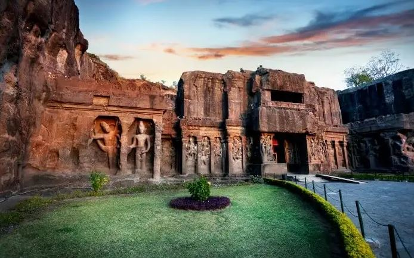
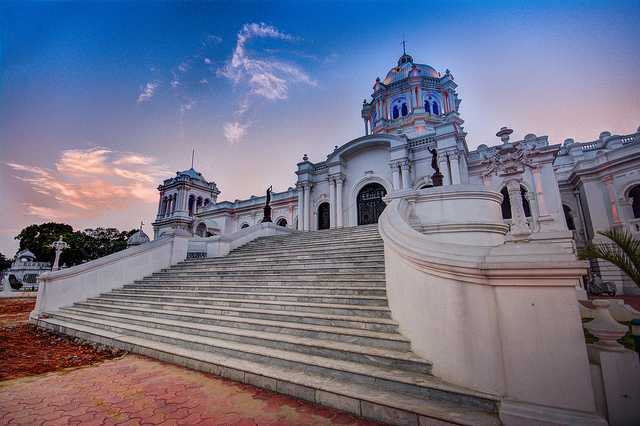
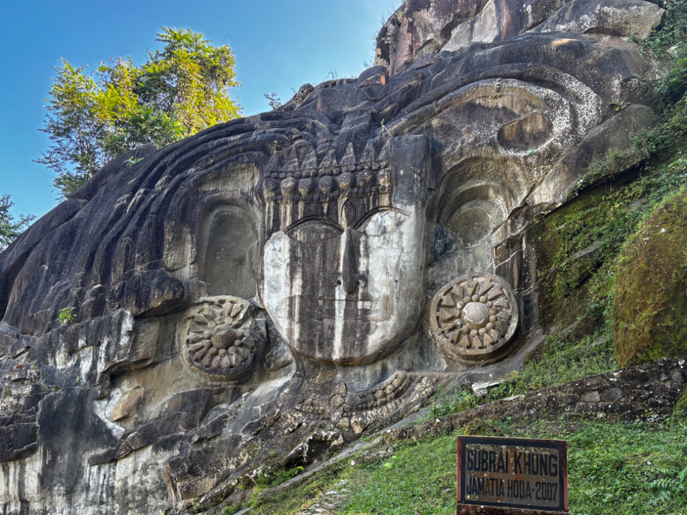
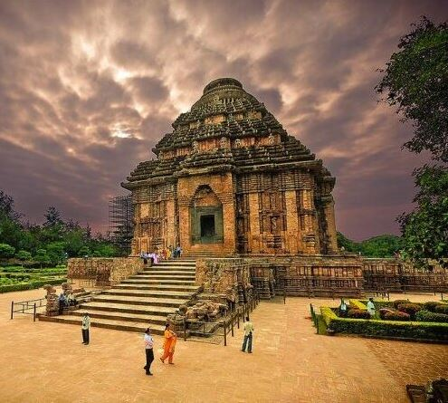

The Taj Mahal is an ivory-white marble mausoleum located in Agra, Uttar Pradesh, India. It is one of the most famous and iconic buildings in the world, known for its breathtaking beauty and intricate craftsmanship. The Taj Mahal is often regarded as a masterpiece of Mughal architecture and is recognized as a UNESCO World Heritage Site.
Construction:
The Taj Mahal was commissioned by Shah Jahan, the fifth Mughal emperor of India, as a mausoleum for his favorite wife, Mumtaz Mahal. Construction of the Taj Mahal began in 1632 and was completed in 1653, employing thousands of artisans, skilled workers, and laborers from across the Mughal Empire and beyond. The chief architect of the Taj Mahal is believed to be Ustad Ahmad Lahauri, a Persian architect....
Legend of Eternal Love:
The Taj Mahal is often referred to as a symbol of eternal love. According to legend, Shah Jahan was deeply devastated by the death of his wife, Mumtaz Mahal, during the birth of their 14th child. As a tribute to his beloved wife, Shah Jahan decided to build an unparalleled mausoleum in her memory, which came to be known as the Taj Mahal. The Taj Mahal is often considered a testament to the profound love between Shah Jahan and Mumtaz Mahal.
Architectural Features:
The Taj Mahal is known for its exquisite architecture and design. It is a combination of various architectural styles, including Persian, Islamic, and Indian. The Taj Mahal is built entirely of white marble, which was brought from various regions of India and Central Asia. The main mausoleum is set on a raised platform and features a large dome surrounded by four smaller domes. The facades of the Taj Mahal are adorned with intricate marble inlay work, including floral motifs, calligraphy, and precious gemstones. The Taj Mahal is also surrounded by well-manicured gardens, reflecting pools, and a grand gateway.
Historical Significance:
The Taj Mahal is not only a symbol of love but also has significant historical importance. It was the main residence of Shah Jahan during his reign and served as the administrative center of the Mughal Empire. The Taj Mahal is also a reflection of the cultural and artistic achievements of the Mughal Empire, which was known for its patronage of arts and architecture.
Preservation and Recognition:
Over the years, the Taj Mahal has faced various threats from environmental pollution, weathering, and human activity. To ensure its preservation, numerous conservation and restoration efforts have been undertaken by the Indian government, including restricting visitor numbers and pollution control measures. The Taj Mahal has also received widespread recognition for its cultural significance. In 1983, it was inscribed as a UNESCO World Heritage Site, and in 2007, it was declared one of the New7Wonders of the World.
Ellora Caves, Maharashtra

The Ellora Caves are a group of 34 rock-cut temples and monasteries located in the Aurangabad district of Maharashtra, India. These caves were built between the 6th and 10th centuries AD, during the reigns of the Kalachuri, Rashtrakuta, and Yadava dynasties. The caves were created by carving into the basalt rock of the Charanandri Hills, and were used as temples, monasteries, and prayer halls by followers of Hinduism, Buddhism, and Jainism.
The construction of the Ellora Caves began in the 6th century AD, with the building of the Buddhist caves. The Hindu caves were built during the 7th and 8th centuries, while the Jain caves were constructed in the 9th and 10th centuries. The construction of the caves was a remarkable feat of engineering, as the builders had to carve into the hard basalt rock using only hammers and chisels.
The Ellora Caves are renowned for their intricate carvings and sculptures, which depict various gods, goddesses, and religious scenes from Hindu, Buddhist, and Jain traditions. Some of the most famous caves include the Kailasa Temple, which is the largest monolithic structure in ...the world, and the Jain Cave 32, which has some of the most detailed and delicate carvings in the entire complex.
The Ellora Caves were designated as a UNESCO World Heritage Site in 1983, and are considered to be one of the greatest examples of rock-cut architecture in India. The caves are an important testament to the religious and cultural history of Maharashtra and India, and attract visitors from all over the world.
Ujjayanta Palace, Tripura

The Ujjayanta Palace is a former royal palace located in the city of Agartala, in the northeastern state of Tripura, India. It was built during the reign of Maharaja Radha Kishore Manikya in 1901 and completed in 1909. The palace was designed by the British architect Alexander Martin and is a fine example of Indo-Saracenic architecture.
The Ujjayanta Palace served as the royal residence of the Manikya Dynasty of Tripura until 1949, when it was merged into the Indian Union. It was later used as the legislative assembly building of the state of Tripura from 1951 to 2011. In 2013, the palace was opened to the public as a museum and tourist attraction.
The palace is spread over an area of 28 hectares and has three domes, which are reminiscent of the Mughal style of architecture. It has 23 galleries,... which house various artifacts, paintings, and sculptures, including rare images of gods and goddesses, historical documents, and items used by the erstwhile rulers of Tripura.
The Ujjayanta Palace is surrounded by sprawling gardens, fountains, and lakes. The palace also has a large auditorium, which is used for various cultural events and functions. The palace is considered to be one of the major tourist attractions of Tripura and attracts visitors from all over the world.
In summary, the Ujjayanta Palace is a historic palace built during the early 20th century by the Manikya Dynasty of Tripura. It served as their royal residence until 1949, and later as the legislative assembly building of the state. Today, it is a museum and tourist attraction, showcasing the history and culture of the state of Tripura.
Unakoti, Tripura

Unakoti is an archaeological site located in the Kailashahar subdivision of the Unakoti Tripura district in the northeastern state of Tripura, India. The name "Unakoti" means "one less than a crore," and is said to refer to the legend that there are one less than ten million rock-cut sculptures at the site.
The Unakoti site dates back to the 7th and 9th centuries AD, during the rule of the Tripuri kings. It is believed to have been a Shaivite pilgrimage site during that time, and the sculptures depict various gods and goddesses from Hindu mythology, including Shiva, Ganesha, and Durga.
The Unakoti site is known for its rock-cut sculptures, which are carved on a steep hillside. The most prominent feature of the site is a large Shiva head, which measures around 30 feet in height. The head is believed to be a representation of the Hindu god, Shiva, and is surrounded by smaller sculptures of gods and goddesses.
The Unakoti site is also known for its natural beauty, with lush green forests and waterfalls surrounding the area. The site has been declared a protected site by the Archaeological Survey of India (ASI) and ...is considered to be an important archaeological and cultural site of the state of Tripura.
According to legend, the Unakoti site is said to be the abode of Lord Shiva, who is believed to have spent a night at the site. The legend also states that one of the sculptors who was carving the sculptures at the site had promised to complete the ten million sculptures within a single night. However, he failed to keep his promise and turned into stone along with the other sculptures.
In summary, Unakoti is an archaeological site located in Tripura, India, that is known for its rock-cut sculptures and natural beauty. The site dates back to the 7th and 9th centuries AD and is believed to have been a Shaivite pilgrimage site during that time. It is considered to be an important cultural and archaeological site of the state of Tripura.
Konark Sun Temple, Odisha

The Konark Sun Temple is a UNESCO World Heritage Site located in the eastern Indian state of Odisha. It is a 13th-century temple dedicated to the Hindu sun god Surya, and is known for its architectural grandeur and intricate stone carvings.
The construction of the temple is attributed to King Narasimhadeva I of the Eastern Ganga Dynasty, who ruled from 1238 to 1264 CE. It is said that the temple was built to commemorate the king's military victories, and as a symbol of his devotion to the sun god.
The temple's design is based on the shape of a colossal chariot, with 24 wheels, pulled by seven horses. The temple is oriented towards the east, so that the first rays of the sun illuminate the sanctum sanctorum. The temple's main sanctum sanctorum was once surmounted by a huge tower, which has since collapsed, and today only the jagamohana (assembly hall) and the natamandapa (dance hall) survive.
The temple is also known for its intricate stone carvings, which adorn the walls and pillars of the temple. These carvings depict various mythological scenes,... including scenes from the Mahabharata and the Ramayana. They also depict scenes of daily life, including hunting, farming, and cooking.
The Konark Sun Temple was a major pilgrimage site during its time, and is still considered to be one of the most important temples in India. However, the temple's decline began in the 16th century, when it was attacked and partially destroyed by Muslim armies. The temple was eventually abandoned, and was covered by sand and vegetation. It was rediscovered by British surveyors in the 19th century, and efforts were made to restore and preserve the temple.
Today, the Konark Sun Temple is one of the most visited tourist destinations in Odisha, and attracts visitors from all over the world. It is a testament to the architectural and artistic achievements of the Eastern Ganga Dynasty, and is a symbol of India's rich cultural heritage.